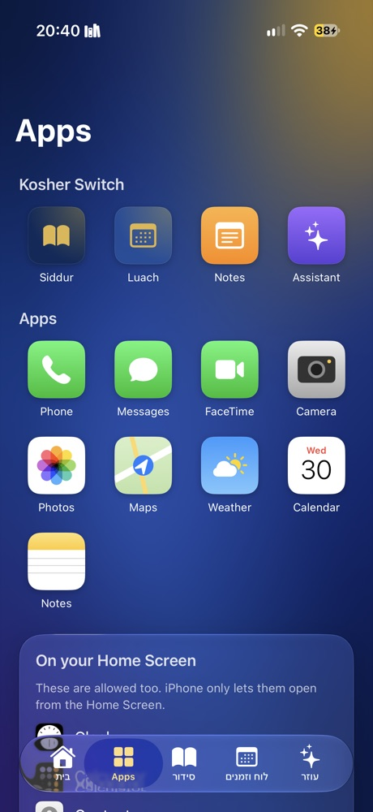
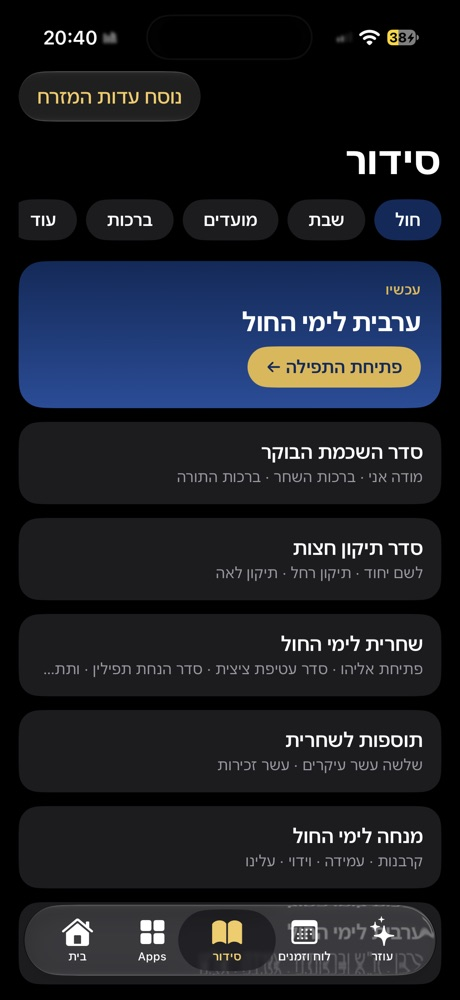
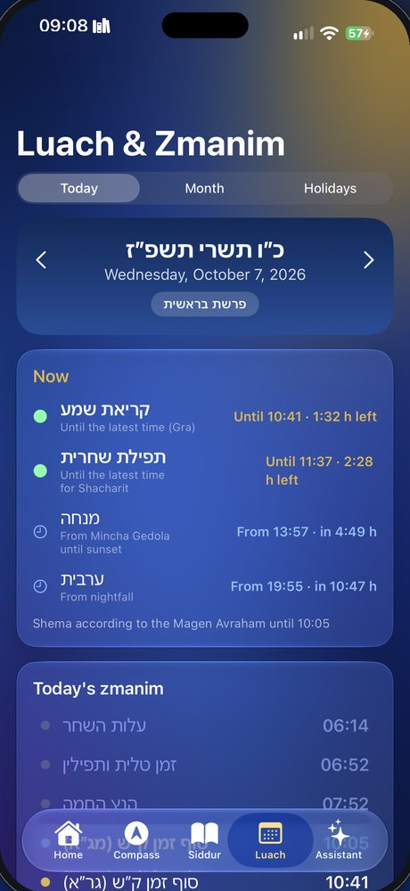
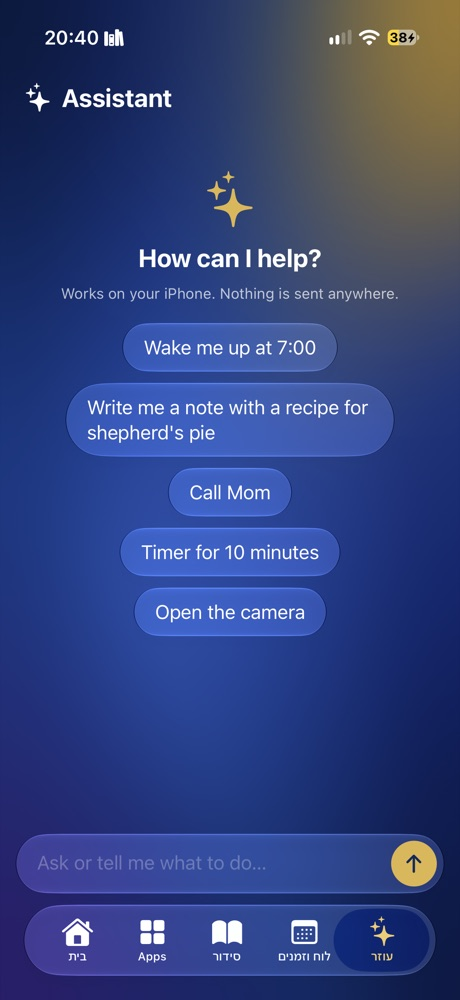

Your iPhone, kosher in one tap
Real screens from Kosher Switch on an iPhone. Scroll through.




One golden switch
Choose the apps you keep, the apps that disappear, and how websites work. Then one tap turns on kosher mode. Only your code turns it off.
A calm kosher home
The clock, the Hebrew date and what's coming up: חול המועד, Shabbos, the next chag. The siddur, luach and your apps are one tap away.
Only the apps you chose
Phone, Messages, Camera, Maps, whatever you decided. Everything else is hidden from the Home Screen or shows the kosher screen.
A full siddur, in your nusach
Ashkenaz, Sefard or Edot HaMizrach. It opens on the tefillah for right now, with every day, Shabbos and the moadim.
Luach & zmanim for where you are
Today's zmanim from alos to tzeis, a monthly luach and the moadim, calculated on the phone for your location.
An assistant that stays clean
"Wake me up at 7", "call Mom", "a note with a recipe". It works on the iPhone and nothing is sent anywhere. Off by default; turn it on if it helps.